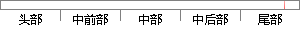

代码质量，规范性上也得到了一定的提升。
片段位置图

相似结果|
相似片段 1：质量输出方面都有了大幅提升，个人工作的规范性上也得到了加强。>项目组成员质量意识提升，交付的代码和文档质量也大幅提升，通过一个阶段质量小组跟踪评审后项目组成员质量意识得到有效提升。>项目交付阶段由专门
|
※ 片段修改建议 ※
近似词参考：- 得到：获得
- 一定：必然 肯定 必定
- 提升：晋升 提拔
系统自动生成语句：代码质量，规范性上也获得了必然的晋升。
注：本片段修改建议为系统自动生成，仅供参考。